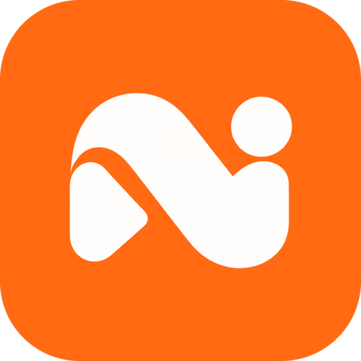
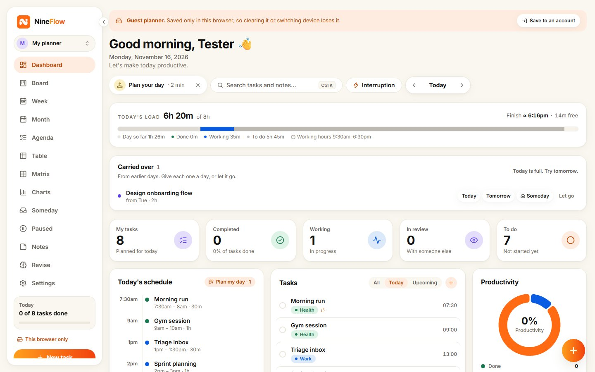
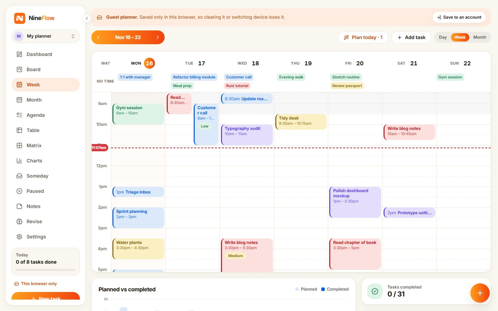
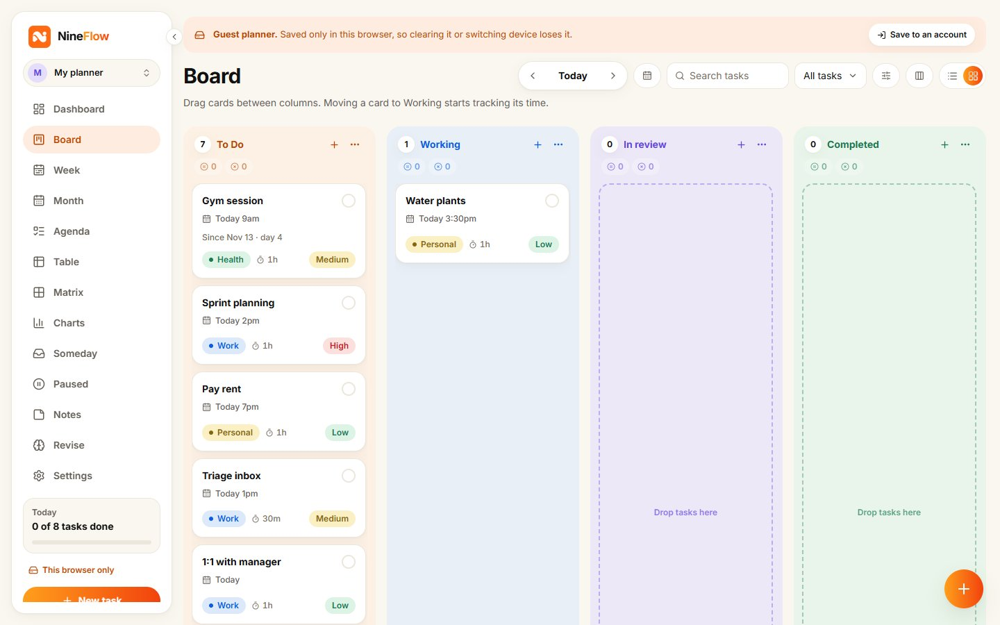
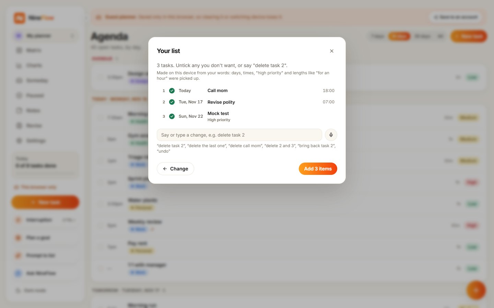
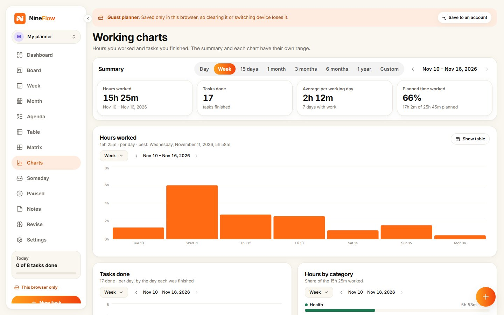
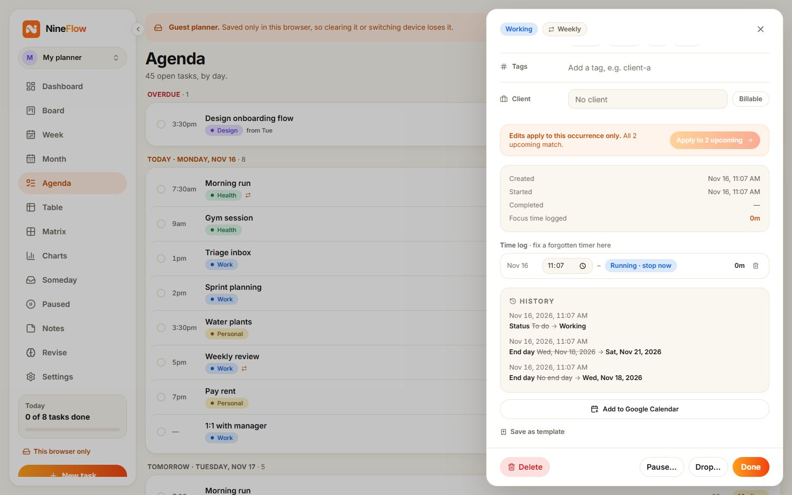
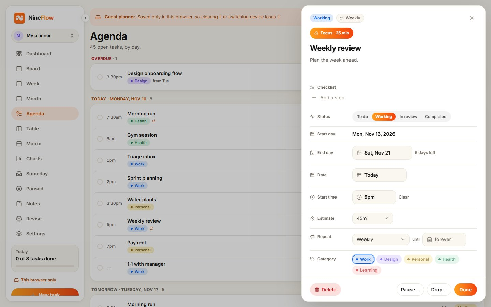
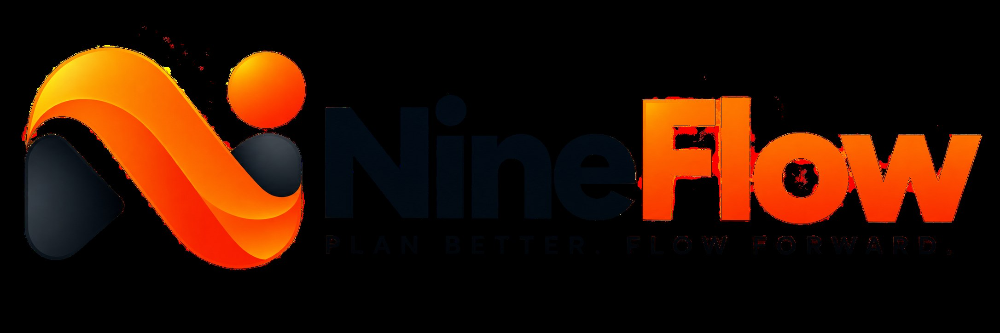

Good afternoon
Today's load, what was carried over, and the day's tasks and schedule.

Plan better, flow forward
Productivity · web, desktop & AndroidIn one app A daily planner, a focus timer and a work log, from a single codebase that works offline.
A daily planner, focus timer and work log in one app, for anyone who wants to plan the day and see where the hours really went.

NineFlow puts three tools that usually live in separate apps into one place: a planner for the day and week, a focus timer that logs real working time on each task, and a work log that remembers every change.
It runs on the web, on Windows and Mac and on Android from one React codebase, and it works offline.
Plans live in one app, timers in another and the record of what actually happened nowhere, so a day's plan and a day's work never meet.
One planner where moving a task to Working starts its timer, and every change to a task is kept, so the plan and the work log are the same thing.
Today's load (planned hours against your working hours), what was carried over from earlier days, and a time-blocked schedule.

The same tasks, seen the way the moment needs: Dashboard, Board, Week, Month, Agenda, Table, an Eisenhower Matrix and Charts.


The day, time, priority, length and category are read from what you type.
Call the bank tomorrow 3pm !high 30m #workSay several tasks at once, then fix them by voice: "delete that", "remove task 2".
Turn a messy note or meeting notes into tasks with AI, with a summary. Nothing is added until you confirm.

A Pomodoro focus timer logs real working time on each task. Charts show hours worked and tasks done over any range, and every task keeps a history of what changed and when.



The Android app is the same planner, laid out for one hand: a bottom bar for Home, Board, Week and Month, and everything else one tap away under More.
Today's load, what was carried over, and the day's tasks and schedule.
Hours or tasks per day, the busiest day and how much of the month is done.
Swipe through the days; untimed tasks sit above the timeline.
To do, Working and In review as tabs, with priority and time on every card.
Interruption, speak tasks, agenda, table, matrix, charts, someday, paused, notes and revise.
Plan and track without a connection; changes sync when you're back.
Google (saved to your own Google Drive), email, or use it as a guest.
Several workspaces, version history with restore, custom fields and themes.
Reminders and Google Calendar sync keep the plan where you already look.
A flowing N mark in an orange gradient, and the line that sums up the product.

Every page and link here is the sample. The live site is unchanged.